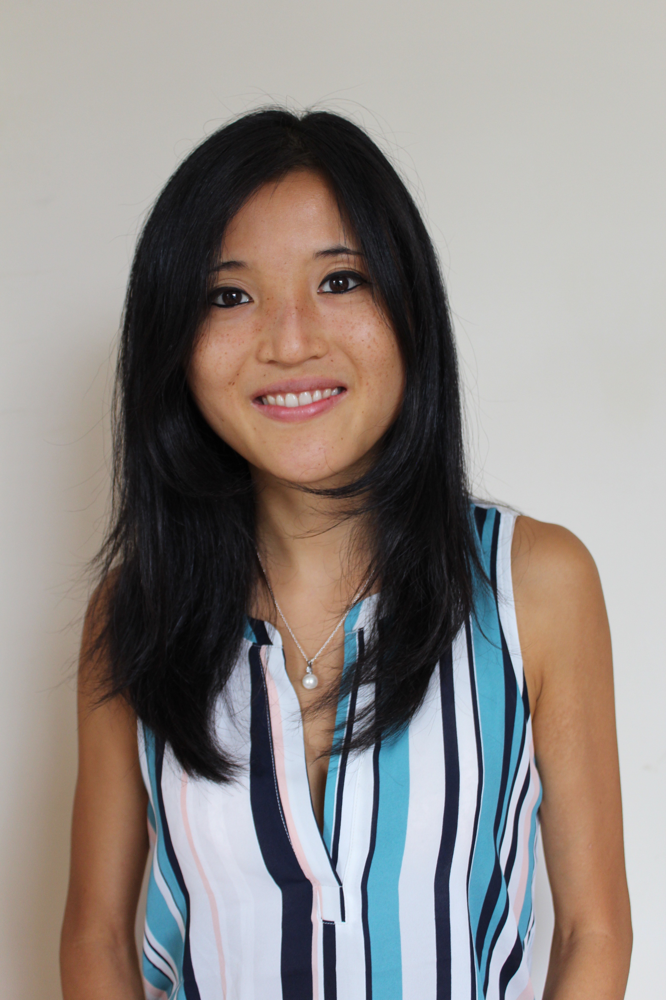

Welcome!
Thank you for visiting my homepage. Here you'll find a summary of my past, present and future geophysical research activities. I am currently undertaking post-doctoral research in the Department of Earth and Planetary Sciences at Harvard University exploring global scale geodynamical problems across many time scales. This includes solid Earth and ocean tides (acting on hours to years), the deformation of the Earth due to the melting of large Pleistocene ice sheets (years to tens of thousands of years), and mantle convection, the process that drives plate tectonics (millions to billions of years). The theme of all of this work is to understand how we can coherently characterize the Earth's behavior across these vastly different time scales.
In July 2019 I will join the Earth and Planetary Sciences department
at UC Berkeley as an assistant professor. If you have any
interest in working with me as part of your graduate or post-doctoral
work, I encourage you to get in touch.
Contact
Department of Earth and Planetary Sciences
Harvard University
20 Oxford St
Cambridge, MA 02138
telephone: +1 (617) 495-9694
email: harrietlau (at) fas (dot) harvard (dot) edu